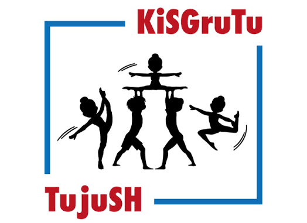

Die hochgeladenen Fotos sind gerade nicht erreichbar. Erneut laden
Aktiviere JavaScript, um die Fotos anzuzeigen und herunterzuladen.
Die Meldung wird auf GitHub abgesendet. Bitte eine erwachsene Person um Hilfe, wenn du dort kein Konto hast.